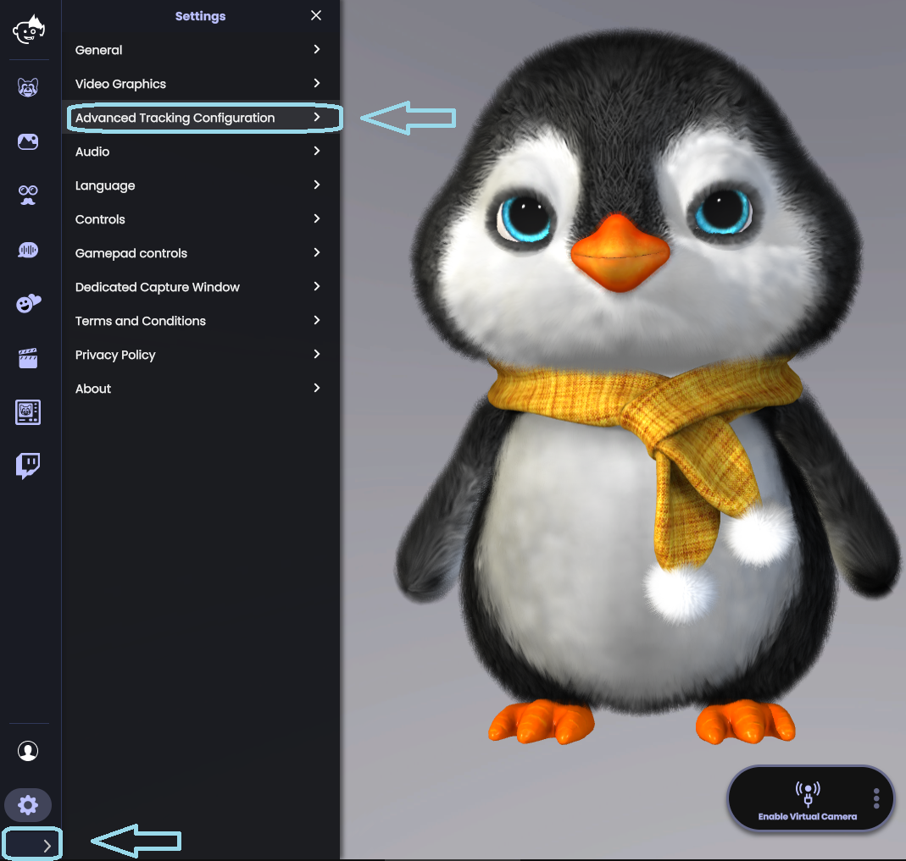
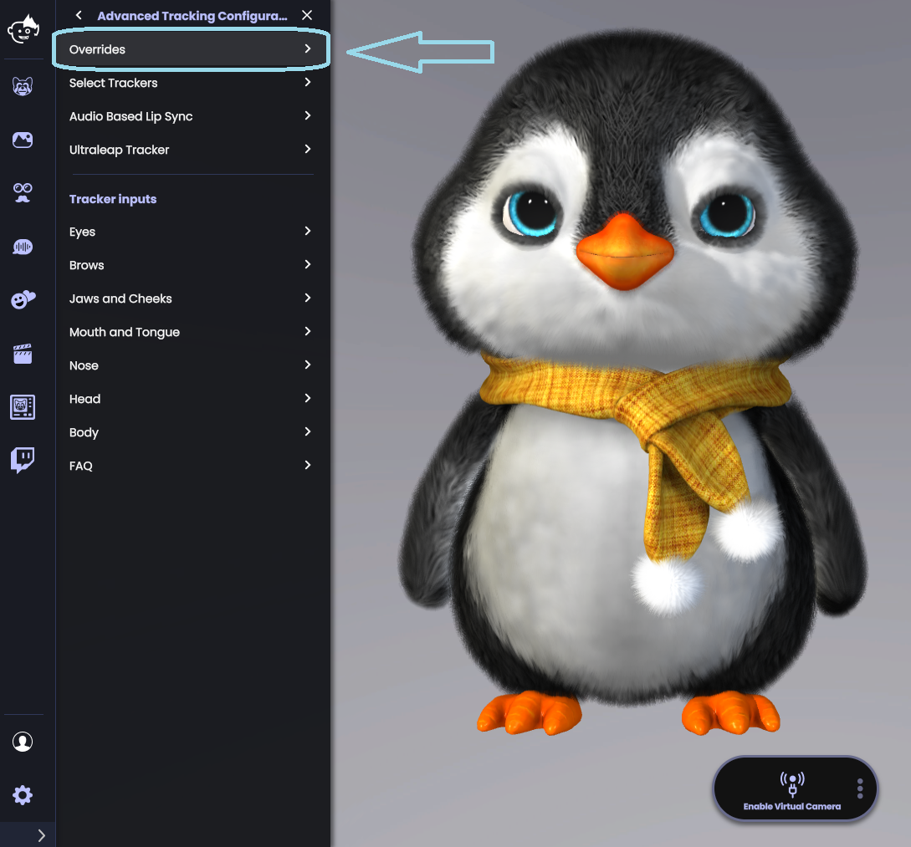
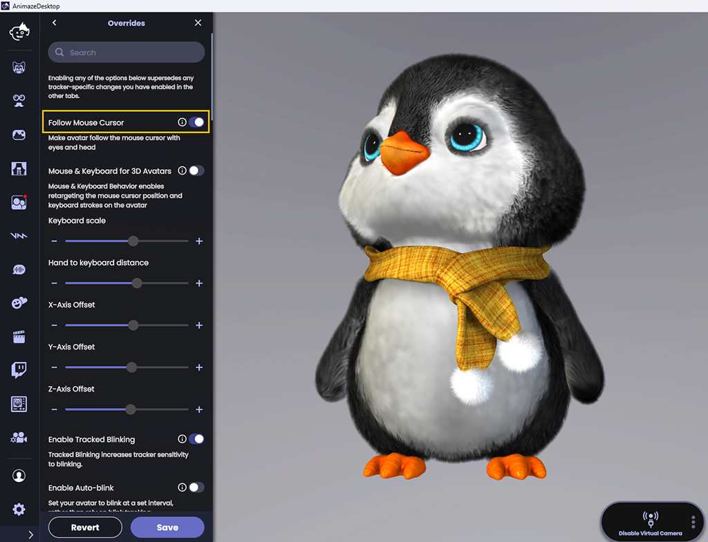

Animaze Desktop: How can I make my avatar’s eyes and head follow the mouse cursor?
Looking for an easier way to make your avatar nod or shake their head? Look no further than Animaze’s Follow Mouse Cursor behavior!
You can activate (or deactivate) the option in a matter of clicks. Here are the steps for it:
In the Animaze app, go to the Settings menu, and then browse towards the Advanced Tracking Configurations.

From here, head on to the Overrides menu

In the menu’ that’ll appear next, you will be able to find the “Follow Mouse Cursor” option. Toggle on and off as per your preference!

Have fun!